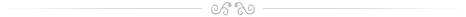

Účast na folklorních festivalech:
Strážnice, Hluk, Milotice, Helpa, Východná, Vlčnov, Zlín, Brno, Janovice, Banská Bystrica, Rožnov pod Radhoštěm, Červený Kostelec
Ostatní vystoupení:
Po celém území České republiky a Slovenska, např. Karlovy Vary, Mariánské Lázně, Fr. Lázně, Velké Losiny, Piešťany, Hodonín, Praha, Slavkov, Holešov, Kopřivnice, Opava, Bzenec, Jablůnkov, Chrudim, atd.
Zahraniční reprezentace:
- 2022 Chorvatsko
- 2021 Slovinsko, Bulharsko
- 2016 Černá Hora
- 2015 Rakousko
- 2014 Rumnunsko
- 2012 -
- 2011 Polsko
- 2010 Chorvatsko, Turecko
- 2009 Belgie
- 2008 Kypr
- 2006 Tchaj-wan
- 2005 Rakousko
- 2004 Polsko
- 2003 Slovensko
- 2002 Portugalsko
- 2001 Argentina
- 2000 Estonsko-Finsko
- 1998 Francie,Japonsko
- 1997 Chorvatsko, Rakousko
- 1995 Španělsko
- 1994 USA-Kanada
- 1993 Švícarsko-Francie, Německo
- 1992 Velká Británie
- 1989 Řecko
- 1888 Jugoslávie
- 1984 Řecko, Jugoslávie
- 1981 Belgie
- 1978 Belgie
- 1976 Maďarsko
Vybraná ocenění
- V roce 2011 získali Zdeněk Langášek, Jiří Petrů st. a Milan Pokorák ocenění pana starosty města Kyjova Mgr. Františka Lukla za dlouholetou práci v oblasti folklóru.
- V roce 2010 získlali Jiří Petrů st. a Milan Pokorák ocenění významných členů a příznivců Folklorního sdružení České republiky u příležitosti 20. výročí vzniku organizace.
- V roce 2006 získal Mužský sbor z Kyjova ocenění Foskar v kategorii nejlepší vokální sbor.
- V roce 2005 získal Jaromír Nečas za doprovodu cimbalisty Jiřího Petrů ocenění Foskar v kategorii hudební nosič.
- V roce 2002 získal Mužský sbor z Kyjova ocenění Foskar v kategorii nejlepší vokální sbor.
- Uznání organizátorů Garden Festival Wales pod patronací Prince a Princezny z Walesu (Velká Británie, 1992)
- Zvláštní cena poroty MFF FOLKORE (Brno, Česká republika, 1993)
- Ocenění Guy Laundry, prezidenta celosvětové organizace CIOFF (Montreal, Kanada, 1994)
- Ocenění Bohemian Hall and Park (New York, USA, 1994)
- Ocenění International Festival Program (Walt Disney World, Florida, USA,1994)
- Ocenění presidenta CIOFF Japan Tokio (Japonsko, 1998)